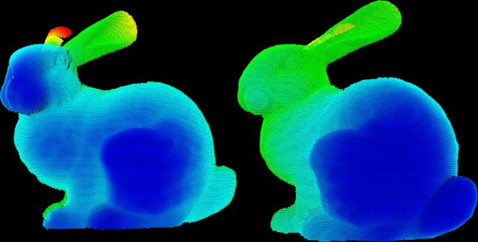
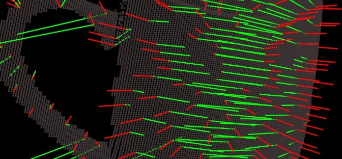

PCL Visualization overview
The pcl_visualization library was built for the purpose of being able to quickly prototype and visualize the results of algorithms operating on 3D point cloud data. Similar to OpenCV’s highgui routines for displaying 2D images and for drawing basic 2D shapes on screen, the library offers:
methods for rendering and setting visual properties (colors, point sizes, opacity, etc) for any n-D point cloud datasets in pcl::PointCloud<T> format;

methods for drawing basic 3D shapes on screen (e.g., cylinders, spheres, lines, polygons, etc) either from sets of points or from parametric equations;
a histogram visualization module (PCLHistogramVisualizer) for 2D plots;

a multitude of Geometry and Color handler for pcl::PointCloud<T> datasets;

a pcl::RangeImage visualization module.

The package makes use of the VTK library for 3D rendering for range image and 2D operations.
For implementing your own visualizers, take a look at the tests and examples accompanying the library.
Note
Due to historical reasons, PCL 1.x stores RGB data as a packed float (to preserve backward compatibility). To learn more about this, please see the PointXYZRGB.
Simple Cloud Visualization
If you just want to visualize something in your app with a few lines of code, use a snippet like the following one:
1 #include <pcl_visualization/cloud_viewer.h>
2 //...
3 void
4 foo ()
5 {
6 pcl::PointCloud<pcl::PointXYZRGB> cloud;
7 //... populate cloud
8 pcl_visualization::CloudViewer viewer("Simple Cloud Viewer");
9 viewer.showCloud(cloud);
10 while (!viewer.wasStopped())
11 {
12 }
13 }
PCD Viewer
A quick way for visualizing PCD (Point Cloud Data) files is by using pcl_viewer. As of 0.2.7, pcl_viewer’s help screen looks like:
Syntax is: pcl_viewer <file_name 1..N>.pcd <options>
where options are:
-bc r,g,b = background color
-fc r,g,b = foreground color
-ps X = point size (1..64)
-opaque X = rendered point cloud opacity (0..1)
-ax n = enable on-screen display of XYZ axes and scale them to n
-ax_pos X,Y,Z = if axes are enabled, set their X,Y,Z position in space (default 0,0,0)
-cam (*) = use given camera settings as initial view
(*) [Clipping Range / Focal Point / Position / ViewUp / Distance / Window Size / Window Pos] or use a <filename.cam> that contains the same information.
-multiview 0/1 = enable/disable auto-multi viewport rendering (default disabled)
-normals 0/X = disable/enable the display of every Xth point's surface normal as lines (default disabled)
-normals_scale X = resize the normal unit vector size to X (default 0.02)
-pc 0/X = disable/enable the display of every Xth point's principal curvatures as lines (default disabled)
-pc_scale X = resize the principal curvatures vectors size to X (default 0.02)
(Note: for multiple .pcd files, provide multiple -{fc,ps} parameters; they will be automatically assigned to the right file)
Usage examples
$ pcl_viewer -multiview 1 data/partial_cup_model.pcd data/partial_cup_model.pcd data/partial_cup_model.pcd
The above will load the partial_cup_model.pcd file 3 times, and will create a
multi-viewport rendering (-multiview 1).

Pressing h while the point clouds are being rendered will output the
following information on the console:
| Help:
-------
p, P : switch to a point-based representation
w, W : switch to a wireframe-based representation (where available)
s, S : switch to a surface-based representation (where available)
j, J : take a .PNG snapshot of the current window view
c, C : display current camera/window parameters
+ / - : increment/decrement overall point size
g, G : display scale grid (on/off)
u, U : display lookup table (on/off)
r, R [+ ALT] : reset camera [to viewpoint = {0, 0, 0} -> center_{x, y, z}]
ALT + s, S : turn stereo mode on/off
ALT + f, F : switch between maximized window mode and original size
l, L : list all available geometric and color handlers for the current actor map
ALT + 0..9 [+ CTRL] : switch between different geometric handlers (where available)
0..9 [+ CTRL] : switch between different color handlers (where available)
Pressing l will show the current list of available geometry/color handlers
for the datasets that we loaded. In this example:
List of available geometry handlers for actor partial_cup_model.pcd-0: xyz(1) normal_xyz(2)
List of available color handlers for actor partial_cup_model.pcd-0: [random](1) x(2) y(3) z(4) normal_x(5) normal_y(6) normal_z(7) curvature(8) boundary(9) k(10) principal_curvature_x(11) principal_curvature_y(12) principal_curvature_z(13) pc1(14) pc2(15)
Switching to a normal_xyz geometric handler using ALT+1 and then
pressing 8 to switch to a curvature color handler, should result in the
following:
$ pcl_viewer -normals 100 data/partial_cup_model.pcd
The above will load the partial_cup_model.pcd file and render its every
100 th surface normal on screen.
$ pcl_viewer -pc 100 data/partial_cup_model.pcd
The above will load the partial_cup_model.pcd file and render its every
100 th principal curvature (+surface normal) on screen.
$ pcl_viewer data/bun000.pcd data/bun045.pcd -ax 0.5 -ps 3 -ps 1
The above assumes that the bun000.pcd and bun045.pcd datasets have been
downloaded and are available. The results shown in the following picture were
obtained after pressing u and g to enable the lookup table and on-grid
display.
Range Image Visualizer
A quick way for visualizing range images is by using the binary of the tutorial for range_image_visualization:
$ tutorial_range_image_visualization data/office_scene.pcd
The above will load the office_scene.pcd point cloud file, create a range
image from it and visualize both, the point cloud and the range image.